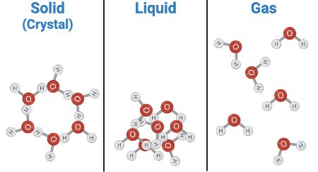
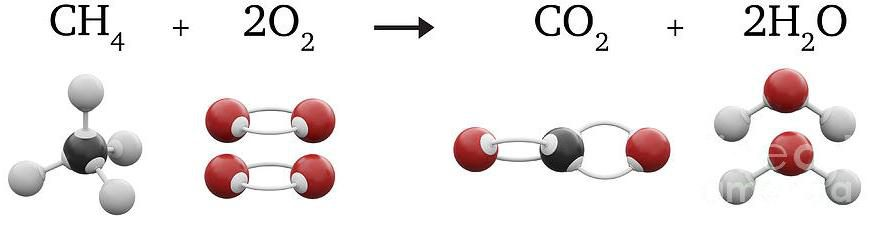
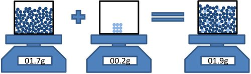
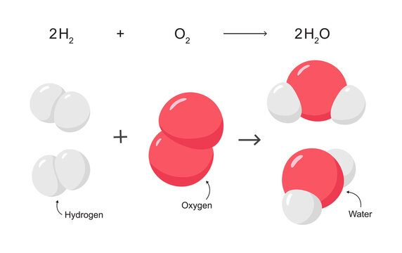

6.1 Chemical reactions vs physical changes
Physical changes change the state or form of a substance without changing what it is chemically. The chemical bonds within the substance do not change.
Chemical changes involve breaking chemical bonds and forming new bonds, making new substances with different properties.
| Physical changes | Chemical changes |
|---|---|
| Change in state | A new substance is formed |
| Change in shape | Colour change |
| Usually reversible | Gas produced |
| No new substance is formed | A precipitate forms (two liquids form a solid) |
| Temperature change |


Give three examples of physical changes and three examples of chemical changes.
Physical changes: ice melting, water boiling or evaporating, dissolving sugar or salt in water, cutting paper, crushing a can, bending wire.
Chemical changes: burning wood or fuel, iron rusting, baking a cake, cooking an egg, a metal reacting with acid (fizzing), food digesting, fireworks exploding.
Law of conservation of mass
When a chemical reaction happens, mass is neither created nor destroyed. All the atoms at the start of the reaction are still there at the end.

6.2 Balancing chemical equations
The law of conservation of mass
Many experiments have shown that matter is conserved in chemical reactions. This is called the law of conservation of mass:
The total mass of the products always equals the total mass of the reactants. Atoms are indestructible: in a reaction, the atoms of the reactants are rearranged into new products, and all the original atoms are still present. To show this in a chemical equation, the number of atoms of each element must be the same on both sides.

Count the atoms on each side of 2H2 + O2 → 2H2O.
| Atoms | Reactants | Products |
|---|---|---|
| Hydrogen | ||
| Oxygen |
Is the equation balanced?
A chemical equation is balanced when there are the same number of each type of atom on both sides.
More worked examples (from the slides)
6.3 Balancing chemical equations practice
Balance the following equations by typing the coefficients. Type 1 where no number is needed.
- Ag + H2SO4 → Ag2SO4 + H2
- K + F2 → KF
- Fe + Cl2 → FeCl3
- SnO2 + H2 → Sn + H2O
- CH4 + O2 → CO2 + H2O
- C8H18 + O2 → CO2 + H2O
- Al(OH)3 + H2SO4 → Al2(SO4)3 + H2O
- CoBr3 + CaSO4 → CaBr2 + Co2(SO4)3
- AgNO3 + K3PO4 → Ag3PO4 + KNO3
- LiNO3 + CaBr2 → Ca(NO3)2 + LiBr
- C + O2 → CO2
- Mg + O2 → MgO
- K + O2 → K2O
- N2 + H2 → NH3
- HCl + Al → AlCl3 + H2
- Na + H2O → NaOH + H2
- H2S + O2 → H2O + SO2
- NO2 + H2 → NH3 + O2
- CaCO3 + H2SO4 → CaSO4 + CO2 + H2O
- ZnCO3 → ZnO + CO2
- KNO3 → KNO2 + O2
- C2H6 + O2 → CO2 + H2O
- Mg + H2SO4 → MgSO4 + H2
- Cu + AgNO3 → Ag + Cu(NO3)2
- Ca(OH)2 + HCl → CaCl2 + H2O
Word equations
Convert each word equation into formulas and balance the complete equation.
Heating copper carbonate solid produces black copper oxide and carbon dioxide gas.
CuCO3 → CuO + CO2 (already balanced)
Magnesium reacts with sulfuric acid to produce magnesium sulfate solution and hydrogen gas.
Mg + H2SO4 → MgSO4 + H2 (already balanced)
Solid copper oxide reacts with hydrogen gas to produce copper metal and water.
CuO + H2 → Cu + H2O (already balanced)
When silver nitrate solution is mixed with potassium chloride solution, silver chloride precipitates in a potassium nitrate solution.
AgNO3 + KCl → AgCl + KNO3 (already balanced)
Sodium burns with the oxygen in air to produce sodium oxide.
4Na + O2 → 2Na2O
Iron (III) oxide reacts with carbon to produce iron metal and carbon dioxide.
2Fe2O3 + 3C → 4Fe + 3CO2
Barium chloride solution reacts with sulfuric acid to give a mixture of solid barium sulfate and hydrogen chloride.
BaCl2 + H2SO4 → BaSO4 + 2HCl
Methane (CH4) burns with oxygen in air to produce carbon dioxide and water.
CH4 + 2O2 → CO2 + 2H2O